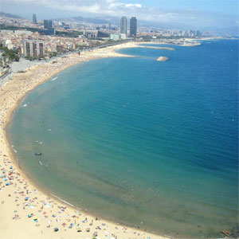

Home History Buildings Restaurants The Beach
La Barceloneta, The Beach

The streets of the Barceloneta in Ciutat Vella district are arranged like corridors running parallel and perpendicular to the Port de Barcelona, and draw us into a world of modest buildings, with balconies displaying clothes hanging out to dry and small ground-floor restaurants and tapas bars, filled with chatter and noise, and permeated by the constant smell of the sea.
The Barceloneta is a triangular spit of land that cuts into the sea boats in the old harbour, or Barcelona’s Port Vell, on one side, and sandy beaches on the other. The neighbourhood, with its narrow, rectilinear streets, was built on a military grid structure to provide accommodation for the former inhabitants of La Ribera who had lost their homes due to the construction of the citadel. The houses were low-rise and small in scale so as not to obstruct views of the city.